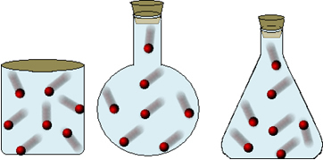
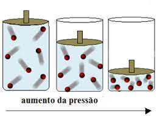
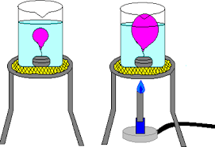

Introdução
O estudo dos gases compreende a análise da matéria quando se encontra no estado gasoso (estado simples). Um gás é composto por átomos e moléculas com pouca interação umas com as outras, diferentemente dos demais estados. Devemos notar que um gás é diferente do vapor. Pois consideramos gás apenas a substancia em estado gasoso com pressão e temperatura ambiente, formas originárias encontradas nesse estado, ou seja, sem ser aquecido e transformado (esses já são considerado vapor).
Propriedades variantes
Podemos dfinir o equilíbrio termodinâmico de um gás através das variantes: Volume, Pressão e Temperatura. Todas as variantes são correlacionadas, podendo ao saber duas encontrar a terceira, como uma equação e com uma equação (referida posteriormente).
Volume
Por não apresentarem forte atração/interação entre as moléculas do gás, a distância entre os átomos são variáveis. Por isso, os gases não são caracterizados por terem forma definida, ocupando o espaço que os abrigam, podendo portanto, serem comprimidos, e consequentemente aumentar sua pressão.
Pressão
As partículas que compõem um gás forçam as paredes do recipiente. A medida dessa força pela área representa a pressão desse gás naquela circunstância, portanto, está diretamente proporcionada com a velocidade das moléculas naquele espaço.
Temperatura
A temperatura de um gás está relacionada com a agitação das moléculas. Sendo assim, a energia cinética das moléculas de um gás é calculada através da medida da sua temperatura. A temperatura é expressa na escala Kelvin, absoluta.
Gás Ideal
Sob certas condições, um gás pode ser considerado perfeito ou ideal.
No entanto, as condições para que um gás seja considerado perfeito são:
Ser constituído por um número muito grande de partículas em movimento desordenado;
O volume de cada molécula ser desprezível em relação ao volume do recipiente;
As colisões são elásticas de curtíssima duração;
As forças entre as moléculas são desprezíveis, exceto durante as colisões.
Na verdade, o gás perfeito é uma idealização do gás real, entretanto, na prática podemos muitas vezes utilizar essa aproximação.
Ao ponto que a temperatura aumenta, e o gás começa a se afastar do ponto de liquefação e adjunto à redução da pressão, torna-se mais ideal.
Ser constituído por um número muito grande de partículas em movimento desordenado;
O volume de cada molécula ser desprezível em relação ao volume do recipiente;
As colisões são elásticas de curtíssima duração;
As forças entre as moléculas são desprezíveis, exceto durante as colisões.
Na verdade, o gás perfeito é uma idealização do gás real, entretanto, na prática podemos muitas vezes utilizar essa aproximação.